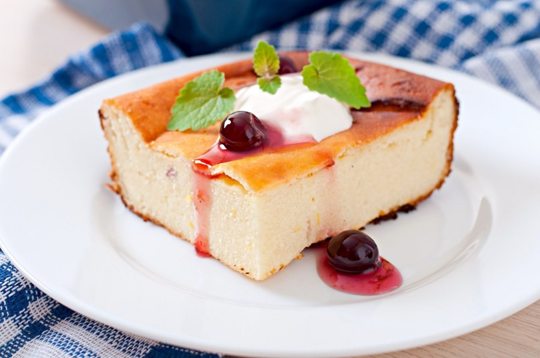
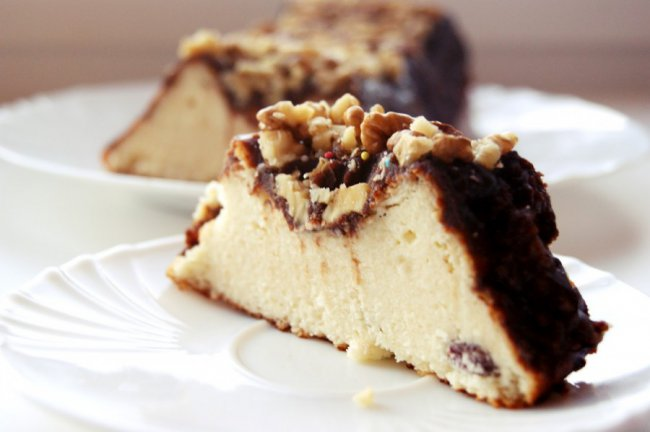

Сирник перекладений – легкий у приготуванні, смачний, в міру вологий та дуже ефектний. Дуже зручно готувати сирник у два етапи – одного дня спекти корж, а на наступний день – готувати сирну масу. Вдалої вам випічки!

Яйця – 3 шт.
Цукор – ½ скл.
Какао – 3 ст.л.
Борошно – ¾ скл.
Йогурт натуральний – 2 ст.л.
Сир – 900 г (перемелений).
Яйця – 5 шт.
Цукор – 1 скл.
Ванільний цукор – 15 г
Борошно – 2 ст.л.
Крохмаль – 2 ст.л.
 Коржі
Білки відділяємо від жовтків, збиваємо до міцної піни, по ложці додаємо цукор, добре збиваємо після кожної порції цукру, по одному вводимо жовтки, збиваємо на найменшій швидкості міксера. Борошно змішуємо з какао та розпушувачем, просіюємо до яєчної маси, акуратно вимішуємо дерев’яною лопаткою, додаємо йогурт, ще раз вимішуємо.Форму (d=24) вистеляємо пергаментом (лише дно), виливаємо тісто, вирівнюємо, випікаємо при температурі 180 градусів 30-40 хвилин, до «сухого сірника». Охолоджуємо, розрізаємо на два рівних коржі. Сирна маса Жовтки збиваємо з цукром та ванільним цукром до пухкої світлої маси. Поступово додаємо перемелений сир, борошно, крохмаль, збиваємо до однорідності. Білки збиваємо до стійкої піни, додаємо до сирної маси, акуратно вимішуємо.Нижню частину коржа викладаємо назад у форму, зверху викладаємо половину сирної маси, зверху кладемо другий корж, викладаємо решту сирної маси (до верху форми має ще залишатися близько 1,5 см).Випікаємо сирник при температурі 160 градусів близько години. Виймаємо форму з духовки, гострим тонким ножем відділяємо сирник від стінок форми. Ставимо сирник назад у духовку, залишаємо при привідчинених дверцятах до повного охолодження. Ставимо сирник в холодильник на 8-10 годин. За бажанням зверху поливаємо улюбленою шоколадною глазур’ю.
© Lviv Polytechnic National University - Marta Liushniak